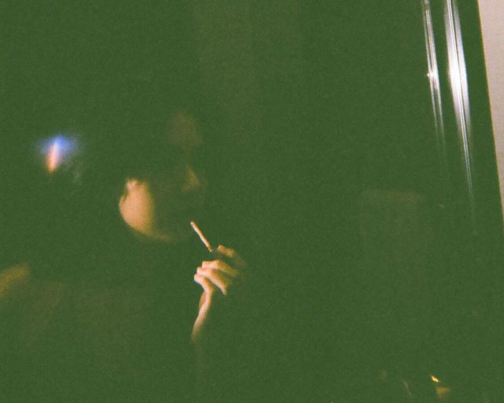

Kembali memegang “percaya†setelah menapaki jalan penuh lika-liku bukanlah sebuah hal yang mudah. Dari keresahan pikiran yang perlu dilengserkan, umpatan-umpatan murka, hingga jurang putus asa yang sedekat pandang, adalah benang merah yang mengganggu tidur sepanjang malam. Namun jika menarik cerita-cerita lampau, setiap hal baik, kesulitan, pencapaian, dan setiap breakthrough, adalah kenyataan yang harus dijalani. Setelah melewati ini semua dan putus asa yang hanya sebatas nyaris, tak sedikit kecewa dan menggerutu mengganggap bahwa hidup ini sepertinya memang dikutuk untuk tetap seperti ini adanya.
Bisa jadi hari ini ribuan orang sedang mengambil jalan yang sama dengan kita. Mereka menuju satu tujuan yang sama dengan apa yang selama ini kita rencanakan. Jalan itu kini mungkin telah sesak dengan ribuan kaki yang berharap segera sampai pada tujuan mereka masing-masing. Meskipun berdesakan dan hanya secercah cahaya yang menyinari jalan kita, kita jangan berhenti. Sebosan apapun, seputus asa apapun, seingin menyerah-nyerahnya kitapun, jangan pernah berhenti melangkah. Tuhan tak pernah salah memberikan jatah untuk hamba-hamba-Nya. Jadi, berjuanglah!
Mungkin kita pernah, kecewa tentang pengharapan yang hasilnya jauh dari perkiraan. Mungkin kita juga pernah, merasakan lelah dalam sebuah penantian, menunggu tapi tak kunjung temu, juga melihat punggung seseorang pergi melangkah menjauhi. Tapi yakinlah, Tuhan tak pernah pergi meninggalkan kita.
Kita mungkin akan kalah tapi setidaknya jangan buat mereka menang dengan mudah. Paling tidak kita telah berjuang semaksimal yang kita bisa, paling tidak kita telah mendekati kemenangan itu meski hanya terpaut satu angka. Bukan kita tidak menginginkan kemenangan itu, bukan. Tapi ketahuilah! kemenangan hampir selalu membawa kebahagiaan jadi kita tak perlu menghibur diri saat kita menang. Tapi tidak setiap orang bisa dengan mudah menerima kekalahan, begitupun kita. Dan disitulah kita ingin berada untuk membantu menyadari kenyataan yang diterima.
Sejarah tebentuk oleh mereka yang optimis, begitu juga dengan masa depannya. Dunia yang kita jalani bukanlah dunia yang sempurna. Tidak ada kesempurnaan, tidak kurang masalah, dan hal buruk yang kerap mendatangi. Membayangkan harapan dengan halu saja pikiran belum sampai. Namun halu sepertinya menjadi kacamata yang paling pas untuk memandang sebuah harapan. Progres perlahan dalam konteks-konteks kecil yang mungkin tidak akan menyenangkan bagi semua orang. Sense of optimism seperti itu yang memberikan perspektif bahwa semua akan baik-baik saja dan memberi alasan untuk berharap daripada untuk takut. Terlewati segala anekdot yang terpatahkan dan batu pijakan yang ditinggalkan. Jika progres adalah tentang yang belum terjadi, lantas apa gunanya memberikan keraguan dengan kemasan yang sama?
Satu dari hidup yang saya percayai adalah Sense of optimism tidak pernah lupa bagaimana caranya menabrak takdir.
Maka Cintailah Takdirmu!